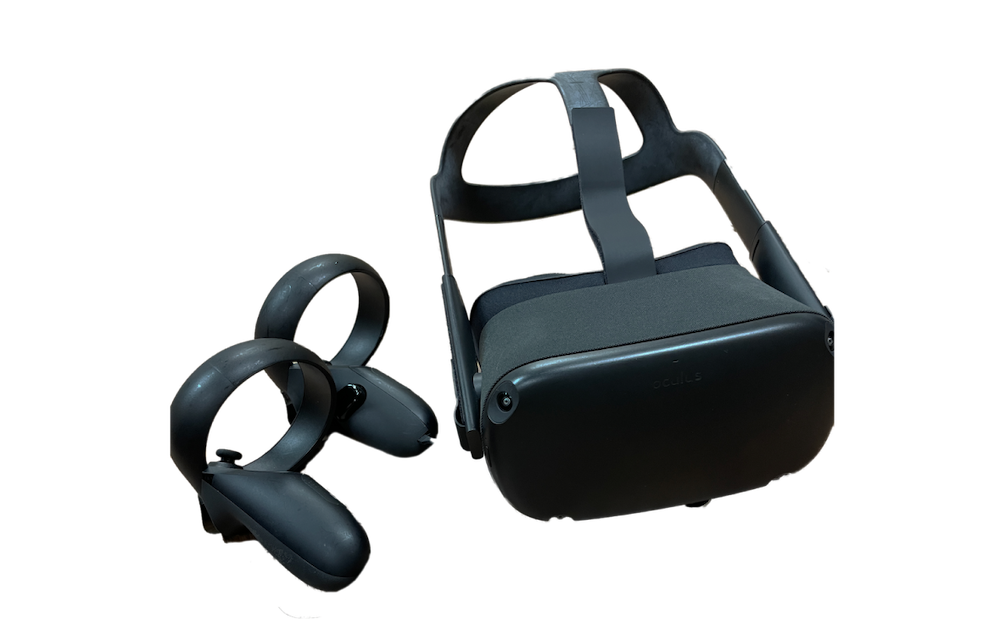

概要
Meta Quest（64GB）
2019年発売のVRヘッドマウントディスプレイ。
詳しいスペック: wiki
つかう前に…
- ・内側の液晶を直射日光に当てないようにする（液晶が壊れるため）
- ・広い空間で使用する。壊れやすい、割れやすい物の近くで使用しない。
補足
- ・有料のアプリを購入したい場合はぜひご相談ください！
HOW TO USE
-
1. コントローラーの紐を両手首に引っ掛けて持つ
-
2. ヘッドセットの右耳側にある電源をつける
- 3. ヘッドセットをかぶる
- 4. ガーディアン（使用する領域）を選ぶ
- お試しなら「静止モード」
- 歩き回りたいなら「歩行モード」
- 5. ホーム画面が起動したら一番右のアイコンを押して、好きなアプリを起動
- 「はじめてのQuest」がおすすめ